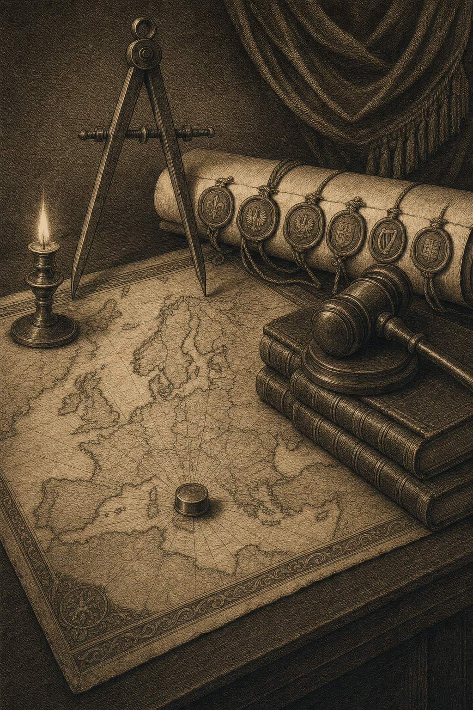

The fourth piece in the Consequence Map series. An average European citizen loses 7.3 percent purchasing power through cumulative EU policy by 2030.
The Brussels Consequence Map
Silent analysis — what the EU powers do to Europe
Jacobus van Merksteijn · Malta, June 2026
The Brussels Consequence Map in one matrix
Twenty European scenarios × ten Brussels mechanisms. Figures are 3rd-order effect 2030 (% income for citizens, % revenue for businesses). The reference column Nova Democratia / VMP is green for every scenario — not through favouritism, but through the absence of prosperity-undermining intervention.
How to read this matrix
Vertically — to see what one mechanism does to all 20 Europeans. The Green Deal column (front-left) produces the most strongly negative figure in almost every row.
Horizontally — to find your own position. The Italian pensioner Giuseppe loses 44.8 percent under the Green Deal; the Portuguese nurse Catarina 42 percent.
Last column on the right (Nova Democratia / VMP) — green throughout. Not as a utopia. As an arithmetic result.
The nine active mechanisms — ranked
| Mechanism | Pressure index | Core consequence |
|---|---|---|
| Green Deal package — Fit-for-55, RePowerEU, ETS-II, Nature Restoration | 40 | Industry €1,500bn in investments 2024–2030 |
| AML-VI + Pillar Two — minimum 15% corporate tax | 32 | Tax-haven structure dismantled (IE, LU, CY, MT) |
| CBAM — Carbon Border Adjustment, steel/cement/aluminium | 30 | European production settled against its own standard |
| EC Von der Leyen-II — Strategic Programme 2024-2029 | 28 | EPP+S&D+Renew coalition 401/720 seats |
| EP majority — group line holds on regulation | 25 | Individual objection overruled |
| NGEU + MFF 2028-2034 — introduction of EU own resources | 22 | Higher contributions NL/DE/SE/AT; more targeted PL/RO |
| DSA + AI Act — digital platforms and AI governance | 20 | High compliance costs EU tech vs. US |
| ECB under Lagarde — interest-rate environment 2022-2026 | 18 | Southern member states with high debt hit hardest |
| EU enlargement + Migration Pact — UA/Moldova/Western Balkans | 15 | Ambiguous effect — markets + labour vs. competition |
Four profiles — what the matrix means concretely
For four representative Europeans: all ten Brussels mechanisms on one bar chart. Click a chart for full size.
Giuseppe Bianchi · 72
Retired in Tuscany. Pension €19,200/yr, own home €185,000. Spends 12% of his income on energy. Under the Green Deal he loses 44.8 percent purchasing power by 2030 — through heating, ETS-II and renovation requirements.
Catarina Sousa · 38
Nurse in Porto, 1 child. Wage €14,400/yr, social-sector rental. Loses 42 percent purchasing power under the Green Deal and the cascade of AML-VI + Pillar Two — a chain she will never see coming.
Klaus Bauer · 58
Mittelständler in Munich, mechanical engineering GmbH with 12 employees. Revenue €4.2m, export EU + US. Under CBAM he loses 12.3 percent revenue — input steel and aluminium become more expensive, customers buy elsewhere.
Caroline Lemaire · 47
EU official AD13 in Brussels. Salary scale indexed to Brussels inflation, pension fixed in the Staff Regulations. Loses only 4.1 percent under the Green Deal — the mildest outcome of all eleven citizens in the matrix.
Five observations from the matrix
OBSERVATION I
The southern European pays for the northern European transition
Southern European households spend a larger share of income on energy, live in warmer climates where cooling becomes more expensive under ETS-II, and have less buffer for building renovation requirements. The Green Deal was designed in Brussels and Berlin, paid for in Lisbon, Athens, Porto and Rome.
OBSERVATION II
Pillar Two hits Malta, not Singapore
The super-rich have long since moved to Singapore or the UAE. AML-VI and Pillar Two dismantle the European tax-haven structure — Ireland, Luxembourg, Cyprus, Malta are hit hardest. Intended effect: more tax revenue for net contributors. Actual effect: wealth destroyed where it is generated.
OBSERVATION III
CBAM is dismantlement, not protection
The mechanism is called 'Carbon Border Adjustment' — on paper it protects against unfair imports. But European production itself is settled against the same standard. Steel, cement, aluminium, fertiliser become more expensive. Cars, buildings, food, machinery become more expensive. Customers buy elsewhere — US, Turkey, Morocco.
OBSERVATION IV
The EU official is the only winner
Caroline works for the system that causes the cascade. Her salary rises with Brussels inflation. Her pension is fixed in the Staff Regulations for EU personnel. Her job grows stronger as enlargement proceeds. She does not become rich — but she does not become impoverished. That is unique in the matrix.
OBSERVATION V
The reference column is green throughout
For every one of the twenty scenarios Nova Democratia / VMP produces a positive end value. Not through favouritism — a meritocratic model has no favourites — but through the absence of regulatory shocks, fiscal restructuring and climate coercion.
Silent explanation — the three tensions
This piece is not about a national election. Not about what PRO does, what Die Linke does, or what PL and PN do in Malta. This piece is about what Brussels does — regardless of where you vote.
The question is simple: a Dutchman votes VVD, a German votes CDU, an Italian votes Fratelli d'Italia, a Pole votes PiS. All four choose civic-conservative. Yet all four receive the same European policy in execution. The Green Deal package continues, Pillar Two continues, CBAM continues, the Migration Pact continues. Their national vote bounces off a Brussels engine that keeps running.
• • •
The three tensions playing out simultaneously
Anyone who genuinely wants to understand The Brussels Consequence Map must see three tensions at the same time. None of them can be separated from the other two.
First tension — national vote versus EU outcome
You vote nationally for a particular direction. Brussels delivers something else. That is no anomaly, no incidental failure — it is the way the system works. Approximately 60 to 70 percent of all new Dutch legislation comes directly from Brussels, transposed into Dutch law without the lower house having more than marginal influence over it. The same percentage applies to Germany. For Malta it is higher.
The democratic expression is located in The Hague, Berlin or Valletta. The legislative reality is located in Brussels.
Second tension — Brussels as net impoverisher
The cumulative outcome of the EU toolkit on the European prosperity base is not neutral. The Green Deal package alone costs European industry between 2024 and 2030 approximately €1,500bn in investments in CO2 neutralisation, energy transition and compliance. Pillar Two has an estimated effect of 40 to 60 billion euros per year in reduced corporate tax competition within the EU. CBAM adds 10 billion euros annually to the input prices of European industrial products.
The US Inflation Reduction Act offers American companies $369bn in direct subsidies and tax advantages for clean technology. China invests $500bn annually in subsidies for its industrial sectors. Europe meanwhile opts for regulation and redistribution, not industrial build-up.
That is not a moral contradiction — redistribution can be morally just. It is an economic reality: a continent that regulates while its competitors subsidise loses its prosperity base. The figures in this document show how.
Third tension — Brussels versus the US and China
BASF has since 2023 relocated a large part of its chemical production to Texas. Volkswagen is closing plants in Wolfsburg and opening capacity in Mexico and China. The British pension fund USS in 2024 reduced its European equity allocation by 15 percent in favour of US equities. The European stock exchanges together are now smaller than Apple and Microsoft alone, in market capitalisation.
This is no abstraction. It is a measurable outflow of capital, talent and industrial capacity. The Brussels Consequence Map measures what that does to you — Maltese non-dom, German Mittelständler, Dutch median-income parent, French farmer, Romanian labour migrant.
The Brussels power positions
For this analysis nine Brussels mechanisms have been selected plus one reference model. Three belong to institutional power — Commission, Parliament, ECB. Three belong to climate and fiscal policy — Green Deal, Pillar Two, CBAM. Three belong to budget and regulation — NGEU/MFF, DSA/AI Act, enlargement/asylum. The tenth is Nova Democratia/VMP as a meritocratic reference model.
Each mechanism receives a pressure index that reflects the cumulative impact on the European prosperity base. Not the moral charge — a high pressure index does not mean the mechanism is bad. It means it intervenes in a restructuring, redistributing or regulating manner in the existing economic order.
INSTITUTIONS — who governs
European Commission (Von der Leyen-II, since 2024) — pressure index 28. The current Commission is supported by a coalition of EPP, S&D and Renew Europe in the European Parliament (together 401 seats of 720). Its Strategic Programme 2024-2029 concentrates on completing the Green Deal, strengthening the European defence industry, completing Pillar Two, and enlargement to Ukraine and Western Balkan countries.
EP majority 2024-2029 — pressure index 25. The EPP-S&D-Renew majority supporting the Commission. No monolithic party, but in practice this coalition consistently delivers the majority for regulatory legislation — even when EPP members raise individual objections, the group line holds.
ECB under Lagarde — pressure index 18. Monetary policy is less directly restructuring than fiscal policy, but the interest-rate environment 2022-2026 has hit the European economy hard — especially the southern member states with high sovereign debt.
CLIMATE + FISCAL — what it imposes
Green Deal package (cumulative) — pressure index 40. The heaviest of the three mechanisms. Consists of Fit-for-55, RePowerEU, ETS-II (extension of emissions trading to buildings and transport from 2027), Nature Restoration Law, biodiversity strategy, and the Industrial Carbon Management Strategy. The combination is estimated to cost the European economy €1,500bn between 2024 and 2030.
AML-VI + Pillar Two — pressure index 32. AML-VI is the sixth anti-money-laundering directive that came into force in 2026, with a new EU-AMLA authority directly supervising large financial institutions. Pillar Two is the OECD-EU agreement on 15 percent minimum corporate tax for multinationals with revenue above €750m. The combination hits countries with fiscal competitive advantages hardest — Ireland, Luxembourg, Cyprus, Malta.
CBAM — pressure index 30. Carbon Border Adjustment Mechanism, fully operational from 2026 for steel, cement, aluminium, fertiliser, electricity and hydrogen. Imported products are taxed on their carbon footprint. The effect: European industrial input costs rise directly, because intra-EU production is also settled against the same standard.
BUDGET + REGULATION — how it pays and regulates
NGEU + MFF 2028-2034 — pressure index 22. NextGenerationEU (€723.8bn) expires in 2026; the next Multiannual Financial Framework 2028-2034 is under negotiation. The Commission wants to introduce EU own resources (e.g. CBAM revenues, ETS share, possible EU wealth tax). For net contributors (Netherlands, Germany, Sweden, Austria) this means higher contributions; for net recipients (Poland, Romania, Portugal, Greece) lower but more targeted receipts.
Digital Services Act + AI Act — pressure index 20. The DSA has been fully operational since 2024; the AI Act runs in phases until 2027. The combination creates a new EU regulatory framework for digital platforms, AI systems and data governance. Effect: high compliance costs for European tech companies, while American counterparts retain their EU market share relatively easily (they have the legal infrastructure).
EU enlargement + asylum pact — pressure index 15. Mildest of the three. EU enlargement to Ukraine, Moldova and the Western Balkans has been approved in principle. The EU Migration Pact 2026 (in force since 12 June 2026) distributes asylum seekers and harmonises procedures. Effect on the European economy: ambiguous — enlargement offers new markets and labour, but also competition for agricultural sectors and public services.
The master matrix
Twenty European scenarios against ten Brussels mechanisms, end value 2030, third order. Read vertically to understand what one mechanism does to Europe; read horizontally to find your own position.
*The Brussels Consequence Map — twenty scenarios, ten mechanisms. The Green Deal package produces the most strongly negative figure in almost every row. The Italian pensioner Giuseppe loses 44.8 percent of his income under the Green Deal; the Portuguese nurse Catarina 42 percent. The reference column (Nova Democratia / VMP) shows a positive outcome for every one of the twenty scenarios — not through favouritism, but through the absence of prosperity-undermining intervention.*
Five observations from the matrix
*Observation 1 — the southern European pays for the northern European transition*
Giuseppe (retired in Tuscany) loses 44.8 percent of his annual income under the Green Deal. Catarina (Portuguese nurse) loses 42 percent. Marie (French teacher Lyon) 27.6 percent.
By comparison: Mark & Lisa (Dutch median household) lose 12.6 percent. Erik (Swedish software engineer) 4.6 percent. Klaus (German Mittelständler) 8.1 percent.
The explanation is not ideological. It is structural: southern European households spend a larger share of their income on energy and basic goods, live in warmer climates where cooling becomes more expensive under ETS-II, and have less buffer for building renovation requirements. The Green Deal was morally designed in Brussels and Berlin, paid for in Lisbon, Athens, Porto and Rome.
Observation 2 — Pillar Two and AML hit whom you do not expect
The largest impacts under AML-VI + Pillar Two are not with the super-rich — they moved long ago to Singapore or the United Arab Emirates. The largest impacts are:
- Multinational holding in Luxembourg: −24.2 percent revenue
- Irish Dublin fintech: −14.9 percent revenue
- Maltese non-dom expat Sanjay: −9.9 percent income
That is no coincidence. AML-VI and Pillar Two are aimed at dismantling the European tax-haven structure. They hit Ireland, Luxembourg, Cyprus and Malta hardest. The intended effect — more tax revenue for net contributors such as Germany — is obtained by destroying wealth at the places where it is generated. The net effect on EU tax revenues is unknown, and possibly negative.
Observation 3 — CBAM is a disaster for those who cannot see Brussels
CBAM appears in the matrix as a mild mechanism: pressure index 30. Yet in practice it leads to the heaviest industrial damage of all EU mechanisms:
- Czech Skoda supplier: −23.6 percent revenue
- German BASF-type chemicals: −23.3 percent revenue
- Polish furniture SME: −14.1 percent revenue
- Dutch construction SME: −18.2 percent revenue
The mechanism name ('Carbon Border Adjustment') suggests that CBAM protects European industry against unfair competition from carbon-intensive imports. That is correct on paper. But in the third order: European production itself is settled against the same standard. Steel, cement, aluminium and fertiliser become more expensive. Products using these inputs — cars, buildings, food, machinery — become more expensive. Customers buy elsewhere. Production relocates to the United States, Turkey, Morocco.
CBAM is called protection. It works as dismantlement.
Observation 4 — the EU official is the only winner
Caroline (Belgian EU official in Brussels) loses an average 4 percent of her income under the Brussels mechanisms — the mildest outcome of all eleven citizens in the matrix. Under Commission + Parliament + ECB together she loses less than 12 percent.
By comparison: Marie (French teacher) loses 48 percent under the same three institutions. Catarina (Portuguese nurse) 71 percent. Mark & Lisa (Dutch median household) 21 percent.
Caroline works for the system that causes the cascade. Her salary rises with Brussels inflation. Her pension is fixed in the Staff Regulations for EU personnel. Her job grows stronger as enlargement proceeds. She does not become rich — but she does not become impoverished. That is unique in the matrix.
Observation 5 — the reference column is green throughout
For twenty European scenarios Nova Democratia/VMP produces a positive end value. Not because the mechanism favours — a meritocratic model has no favourites — but because it does not undermine the prosperity base through regulatory shocks, fiscal restructuring or climate coercion.
The difference between the Brussels mechanisms and the reference model is not ideological. It is methodological. The Brussels mechanisms attempt to reform Europe through regulation, taxation and redistribution. The reference model measures the prosperity base as an end in itself, and sets performance requirements on every unit of public money. Those who follow the first path get this matrix. Those who follow the second get the green column.
What this is not
This piece is not a plea for Nexit, Dexit, or dissolving the EU. The European Union is, despite everything stated below, the strongest instrument of peace Europe has had in eighty years. No competent analyst argues that dissolution is desirable.
This piece is also not an attack on individual EU leaders. Ursula von der Leyen, Christine Lagarde, Manfred Weber and Iratxe García are not plunderers. They carry out the mandates for which their groups were elected. The Commission responds to the Council; the Council responds to national elections; the ECB responds to its treaty.
What this piece is: a measurement of what this system does cumulatively. Not what one institution does, not what one law does, but what the ten major Brussels mechanisms together produce in a European household, a European business, a European citizen.
The question to the reader is not 'are you for or against the EU?'. The question is: with this matrix before you, would you still allocate the same fraction of your vote to the same mechanisms? And if not — which mechanisms would you reduce, which strengthen, and which replace with something that approximates the green reference column?
What this means for the European voter
The European voter faces a paradox. He votes nationally for his choice. Brussels delivers the opposite. He votes for his farmer; Brussels delivers Nature Restoration. He votes for his industry; Brussels delivers CBAM. He votes for his prosperity; Brussels delivers redistribution that destroys prosperity.
This is not democratic failure. It is the functioning of a system as designed — a system that prefers technocratic decision-making over national voting, because its builders believed that populist emotions (1930-1945) were more catastrophic than technocratic decisions. That conviction was once defensible. Whether it remains defensible in 2026 — that is the real question beneath every European ballot.
The Brussels Consequence Map offers no answer to that question. It offers the figures with which the question can finally be posed in concrete terms. For your household, your business, your profession, your country.
Methodology and sources
The methodology is identical to that of the Dutch, German and Maltese Consequence Map versions: a three-step model with three orders (direct wallet, macro effects, cascade). Calibrated on:
- Strategic Programme European Commission 2024-2029 (Von der Leyen-II),
Commission Communication COM(2024) 451 final.
- Pillar Two implementation report EPRS (European Parliamentary Research
Service), May 2025.
- Fit-for-55 impact assessments DG CLIMA, 2023-2025.
- CBAM implementation report DG TAXUD, March 2026.
- NGEU final report + MFF 2028-2034 proposal, Commission June 2025.
- EU Migration Pact 2026 (in force since 12 June 2026), DG HOME.
- Statistics South Africa Q1 2026 (32.7% unemployment), INDEC Argentina
2024 (50% pension erosion), CPB Keuzes in Kaart, DIW Berlin Konjunkturprognose 2026.
- EP 2024 election results: EPP 188 seats, S&D 136, Renew 77,
Greens-EFA 53, ECR 78, PfE 84, ESN 25, NI 79. Coalition EPP+S&D+Renew = 401 of 720 seats.
The Excel model with all EU scenarios will be made available at eu.gevolgenkaart.nl when the platform goes live.
• • •
WRITTEN BY JACOBUS VAN MERKSTEIJN WITH EDITORIAL AI SUPPORT
HET OPEN VIZIER — OPENVIZIER.ORG
THE CONSEQUENCE MAP SERIES — GEVOLGENKAART.NL • KONSEQUENZKARTE.DE • KONSEGWENZI.MT • EU.GEVOLGENKAART.NL
JUNE 2026

Jacobus van Merksteijn
Malta
Entrepreneur, engineer and publisher of Het Open Vizier. Writes about industry, governance and the foundations of a mature society.
More about the author →